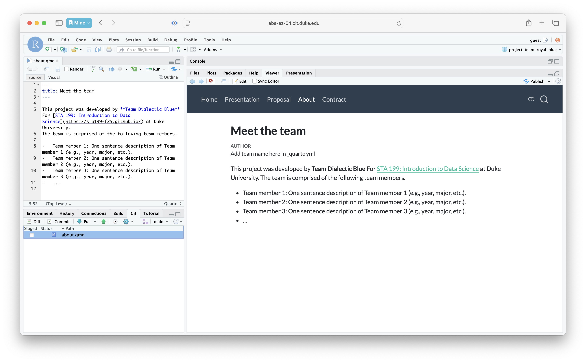
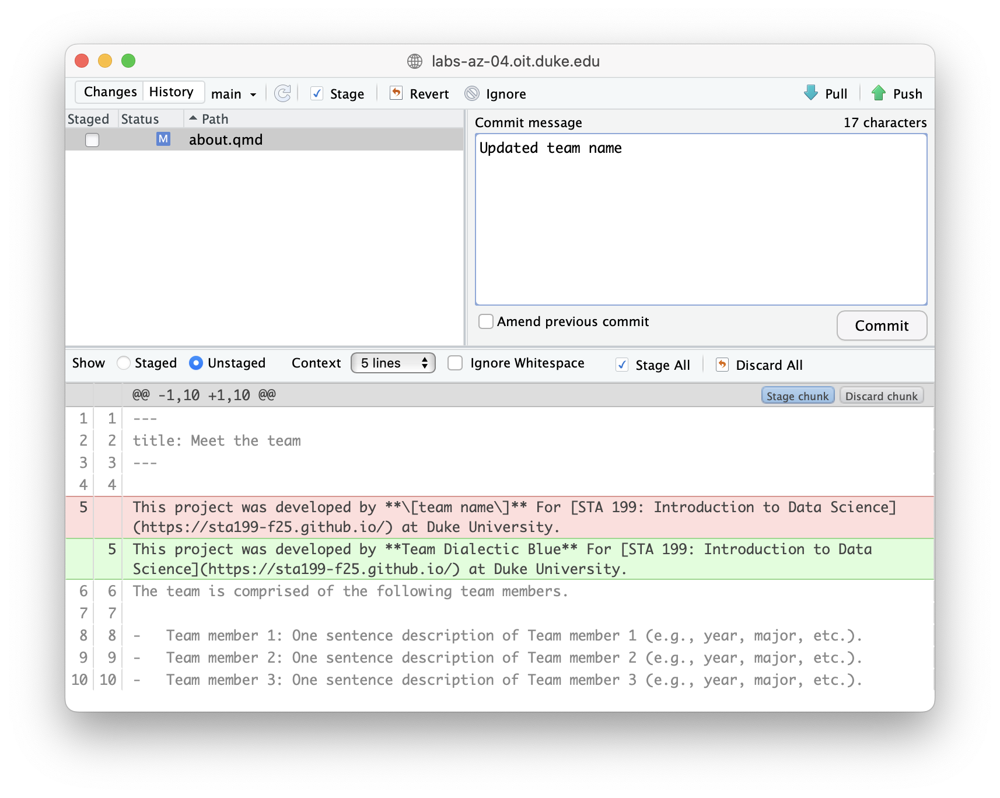
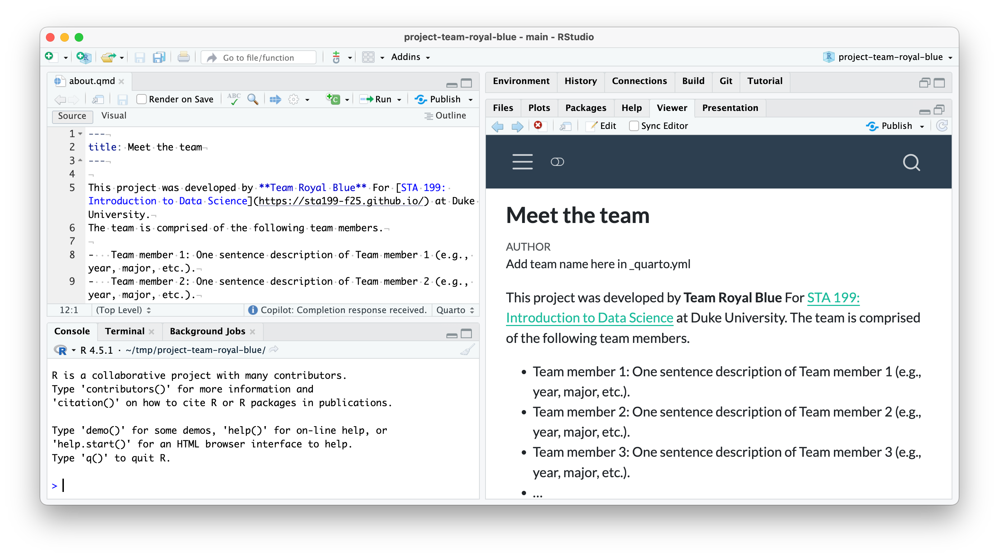
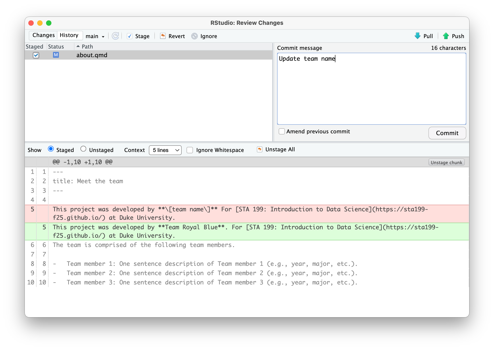
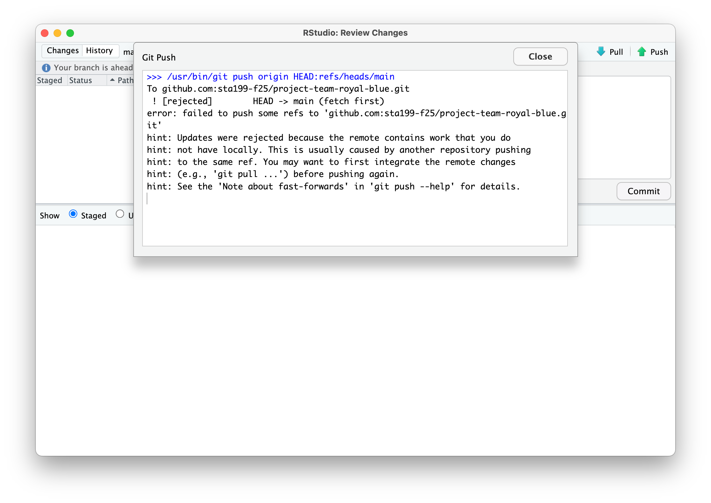
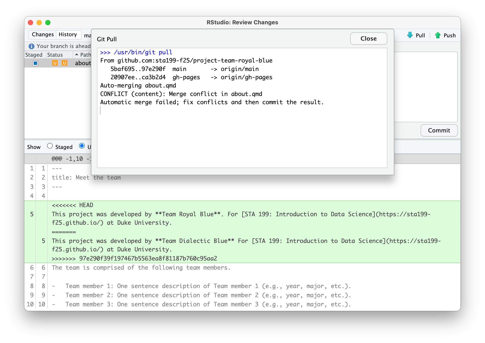
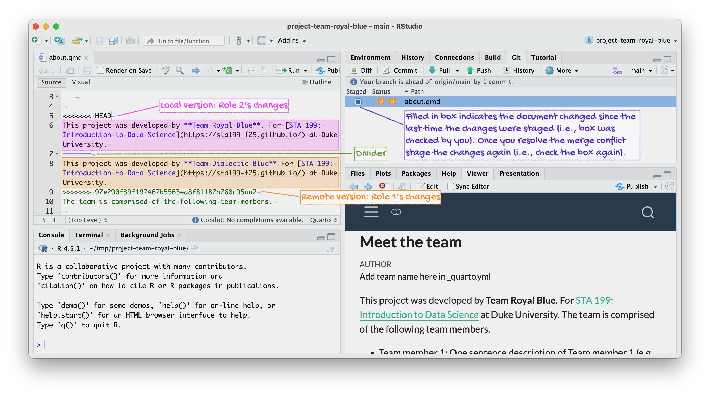
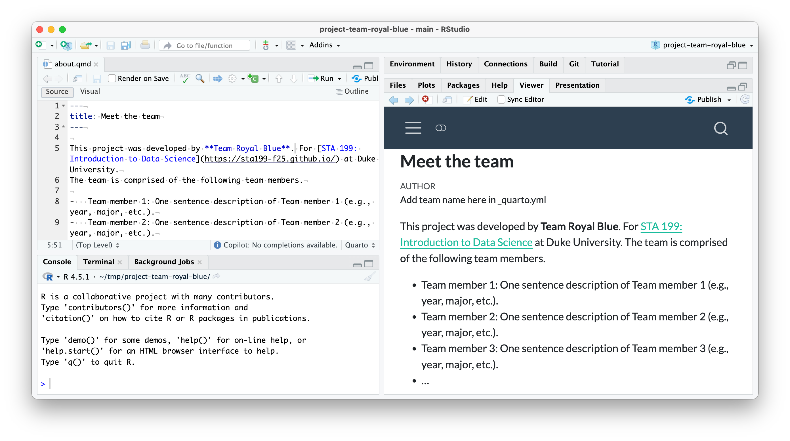
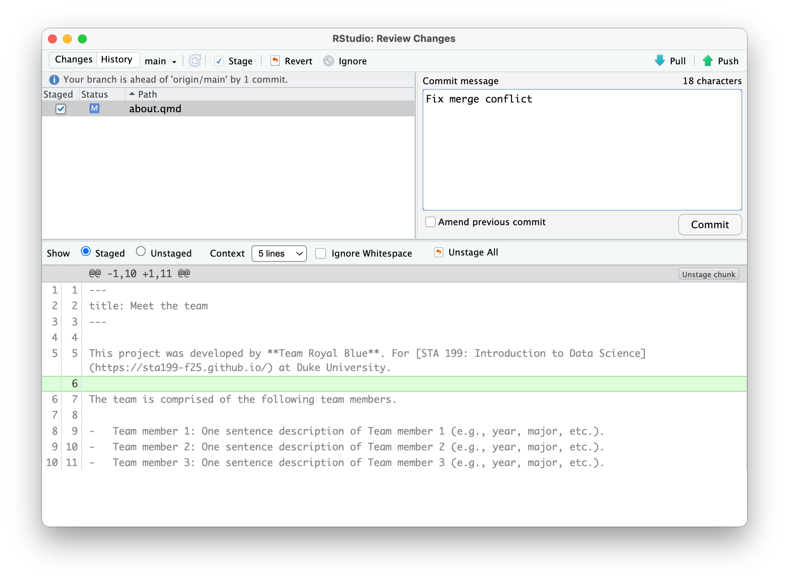
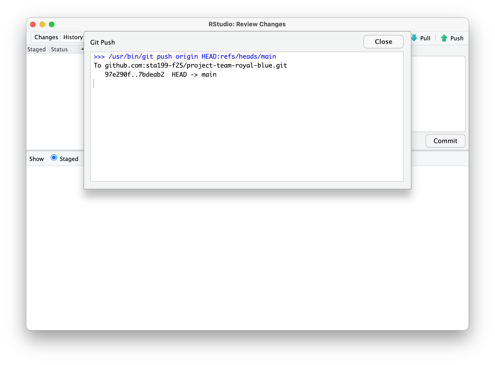

Working collaboratively
Milestone 1
You should have completed the pre-read before starting this milestone.
You must attend class and participate in the merge conflict activity to be eligible for the points for this activity. Team members who are not in class for this activity will not be eligible for these points, regardless of their contribution throughout the rest of the project.
Data science is a collaborative discipline. Pretty much no data scientist works alone, so neither should you! In this course you’ll collaborate with teammates on the project.
The first milestone of the project, today’s activity, will introduce you to the technical aspects of collaborating on a reproducible data science project that is version controlled by Git and hosted on GitHub in a repository shared by all teammates.
Yes, this means you and all of your teammates will be pushing to the same repository! Sometimes things will go swimmingly, and sometimes you’ll run into merge conflicts.
The word “conflict” has a negative connotation. And, indeed, merge conflicts can be frustrating. But they serve to make sure no team member inadvertently writes another team member’s work. All changes that are in “conflict” with each other need to get resolved explicitly, with a commit message, which helps avoid haphazard overwriting.
Goals
The goals of this milestone are as follows:
- Pick a team name
- Collaborate on GitHub with your teammates and resolve merge conflicts when they inevitably occur
- Discuss and write up your team contract
Team name
Pick a team name. It can be straightforward, or it can be cheeky, but it must be SFW.
Activity
Setup
- Clone the
projectrepo and open theabout.qmdfile. - Assign the numbers 1, 2, 3, and 4 to each of the team members as follows: If your team has 2 members, then one member should take on Roles 1 and 4, and the other should take on Roles 2 and 3. If your team has 3 members, then one member should take on Roles 1 and 4, one should take on Role 2, and one should take on Role 3.
Let’s cause a merge conflict!
Our goal is to see two different types of merges: first we’ll see a type of merge that git can’t figure out on its own how to do on its own (a merge conflict) and requires human intervention, then another type of where that git can figure out how to do without human intervention.
Doing this will require some tight choreography, so pay attention!
Take turns in completing the exercise, only one member at a time. Others should just watch, not doing anything on their own projects (this includes not even pulling changes!) until they are instructed to. If you feel like you won’t be able to resist the urge to touch your computer when it’s not your turn, we recommend putting your hands in your pockets or sitting on them!
Before starting
Everyone should have the repo cloned and know which role number(s) they are.
Role 1
- Go to
about.qmdin your project repo. Change the[team name]to your actual team name. - Render the project by clicking on Render, commit (all changed files), and push.


Make sure the previous role has finished before moving on to the next step.
Role 2
- Change the team name to some other word. Then, render the project by clicking on Render and commit all changed files.


- Now try to push your changes. You should get an error.

- Pull. Take a look at the document (
about.qmd) with the merge conflict.


- Resolve the merge conflict by editing the document to choose the correct/preferred change. Then, render the project by clicking on Render.

about.qmd document to remove the merge conflict decorators (<<<<<< HEAD, ======, and >>>>>>> 97e290f39f197467b5563ea8f81187b760c95aa2, the commit hash). Since the team name is “Team Royal Blue”, Role 2 deletes Role 1’s edit and keeps their own. Then, Role 2 renders the project.
- Click the Stage checkbox for all files in your Git tab. Make sure they all have check marks, not filled-in boxes.

- Commit and push.

Make sure the previous role has finished before moving on to the next step.
Role 3
- Fill in the name of the first team member after “Team member 1:” in
about.qmd. - Render the project, commit, and push. You should get an error.
- Pull. No merge conflicts should occur, but you should see a message about merging.
- Now push.
Make sure the previous role has finished before moving on to the next step.
Role 4
- Change the name of the first team member to something other than what the previous team member did.
- Render the project, commit, and push. You should get an error.
- Pull. Take a look at the document with the merge conflict. Clear the merge conflict by choosing the correct/preferred change. Render the project by clicking on Render in the Build tab, commit, and push.
Make sure the previous role has finished before moving on to the next step.
Role 5 (Everyone)
One at a time, each team member should complete the following steps:
- Pull all changes from the remote repo.
- Change the name of the second team member.
- Render the project by clicking on Render in the Build tab, commit, and push. You should not get an error because you pulled first. This models “good” collaborative behavior – start with pulling before doing any work.
Everyone
Pull, and observe the changes in your project.
Tips for collaborating via GitHub
- Always pull first before you start working.
- Resolve a merge conflict (render and push) before continuing your work. Never do new work while resolving a merge conflict.
- Render, commit, and push often to minimize merge conflicts and/or to make merge conflicts easier to resolve.
- If you find yourself in a situation that is difficult to resolve, ask questions ASAP. Don’t let it linger and get bigger.
Team contract
Go to your project repository and open contract.qmd. As the instructions suggest, pick a teammate to be the scribe. Discuss the prompts and write up your answers. Once done, click Render, commit, and push.
Grading
The first milestone of your project will be evaluated based on your participation in this activity. Each team member who participates in the activity in person during class will earn 5 points towards their project.